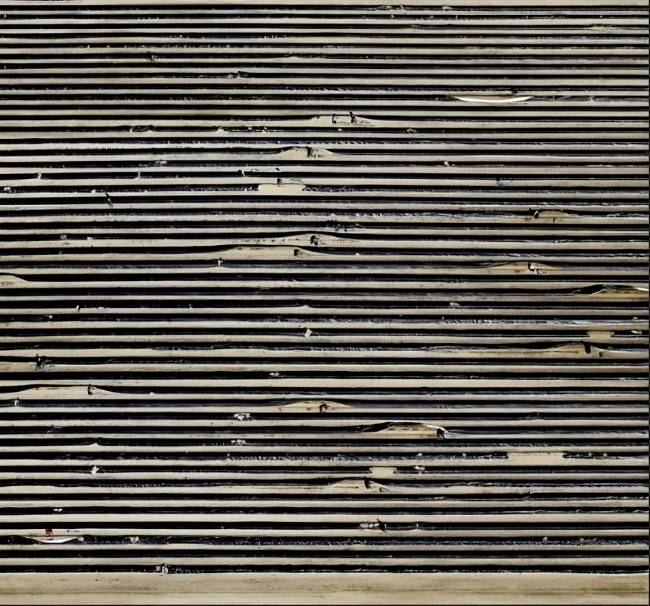
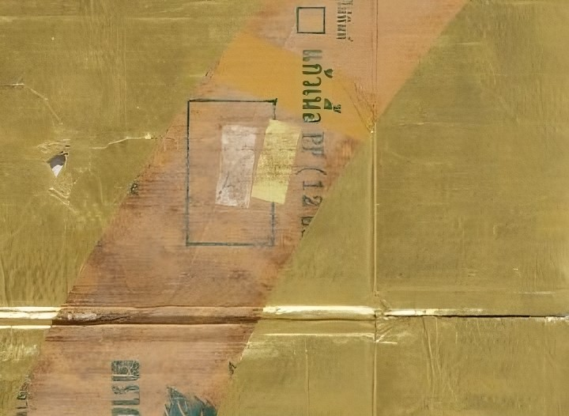
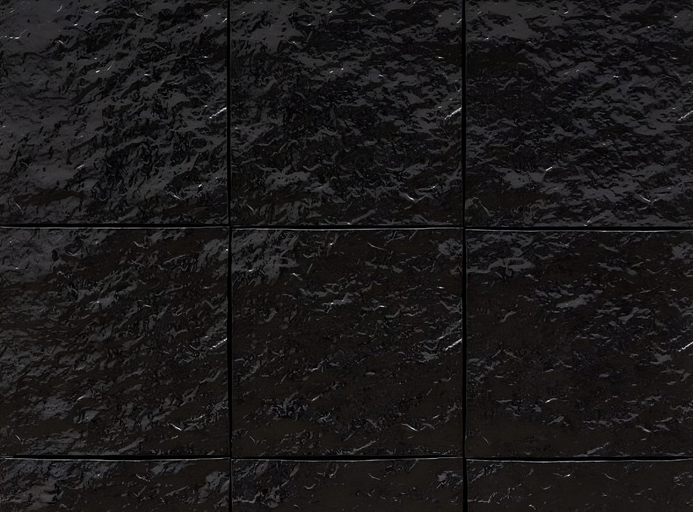
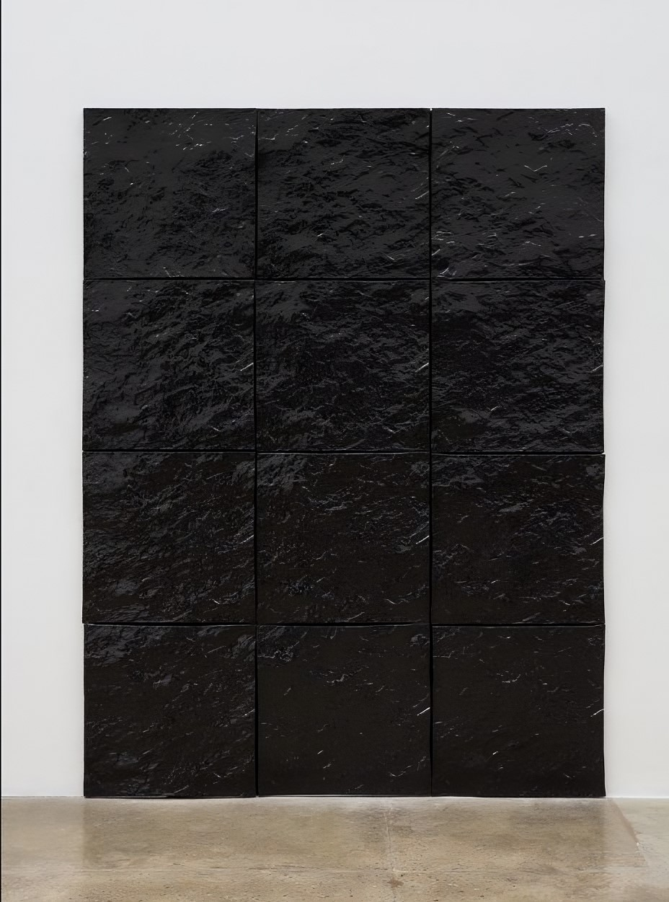

대형 초상 작업을 하는 강형구는 잡지나 도록에 실린 사진에 상상력을 더하여 미세한 주름, 피부결, 머리카락과 같은 극사실주의적 디테일을 표현하는 작가입니다 이 작품은 빈센트 반 고흐를 묘사한 초상화로 세상을 등지고 외롭게 싸운 고흐의 인생을 비장한 표정을 통해 드러내었습니다.
맑고 푸른 눈동자는 보는 이로 하여금 얼굴 이면에 있는 존재의 본질과 정신성을 느끼고 교감하게 합니다. 특히 극사실주의적인 초상화처럼 보여지지만, 사실은 허구가 더해진 이미지라는 점에서 더욱 흥미로운 작품입니다.
박여주,<일월오봉도lll>
규격화된 건축 구조 안에서 새로운 공간을 만드는 박여주는 사람들이 평소에 잘 인지하지 못하는 공간 그 자체에 주목합니다.
<일월오봉도 lll>(2022)에서 작가는 빛과 구조물을 이용해 조선시대 왕의 상징이자 어좌 뒤에 놓였던 일월오봉도를 설치 작업으로 구현합니다.
해와 달 그리고 다섯 개의 산봉우리를 그린 그림을 뜻하는 일월오봉도가 미술관 공간 안에서 평면과 입체를 오가며 감각적인 작업으로 펼쳐집니다. 작가는 해와 달이 함께 떠 있는 그림에서부터 영감을 받아 시공을 초월하는 풍경을 그려내고자 했습니다. 왕이 그 앞에 앉아야 비로소 완성되는 일월오봉도처럼, 박여주의 작품 또한 관람객이 직접 그림 속 공간으로 들어서야 온전히 체험될 수 있습니다.
벨리츠, <무제>
작품<무제 XIX>은 멀리서 보면 분홍색과 오렌지 색으로 이루어진 색면 회화처럼 보이지만, 가까이 다가가면 수백만 송이의 튤립으로 가득 찬 들판이라는 것을 알게 됩니다. 밭 고랑에 심어져 있는 튤립 하나하나는 작지만 그 모습이 분명하게 드러나 있습니다. 세번째 작품은 단조로울 정도로 번갈아 이어지는 검은색과 미색의 수평의 띠로 이루어진 작품을 자세히 보면 아스파라거스 밭을 덮고 있는 검은 비닐 시트와 시트 사이에 드러나는 흙이라는 것을 알 수 있습니다. 비닐 시트를 누비며 아스파라거스를 수확해서 작은 수레에 싣고 있는 사람들은 아주 작게 나타납니다.


얀 보, <숫자 (7)>
얀 보는 베트남에 수입된 소비재 운송용 종이 상자에 금박을 입히는 작품을 지속적으로 제작해왔습니다. 재활용 더미에서 다 쓰고 버려진 상자를 수집하고 태국 전통 금박 공예가에게 보내 알파벳, 숫자, 상표 로고, 또는 성조기 등의 모양으로 치장하는 작업입니다
<숫자 (7)>은 종이 상자에 숫자 '7'의 모양을 남기고 나머지 부분을 금박으로 뒤덮은 작품입니다.
작가는 폐기된 일회용 물품을 부의 보편적인 상징이자 종교화의 배경 또는 동남아시아의 사찰을 호화롭게 장식하는 금으로 회생시킵니다. 재탄생한 상자는 안에 들어있던 물품이 아닌 그 자체로서 새로운 가치를 얻게 됩니다.


<무제(검은 흙)>
작가는 본인의 집 근처 언덕에 위치한 암석의 표면을 석고로 본뜨고 다시 점토로 찍어낸 다음 가마에서 구워 광택 나는 검은색 표면을 가진 정사각형 타일을 제작했습니다. 작가는 타일 여러 개를 그리드 형태로 벽면에 설치하여 <검은 흙 시리즈>를 완성하였습니다.
메리 코스는 이 작업 시리즈를 회화로 여깁니다. 지면의 형태 위에 석고를 발라서 떠내는 행위가 캔버스의 표면에 물감을 올리는 것과 다를 바 없기 때문입니다. 마치 파도 치는 듯한 유광의 검은 표면은 빛이 일렁이는 효과를 극대화합니다.